Autodoc - ведущая европейская e-commerce платформа, специализирующаяся на продаже автозапчастей, аксессуаров и товаров для автомобилей.
Работает в 27 странах Европы
Более 5,2 млн товаров от 600+ брендов для 160+ марок
Частные автовладельцы и профессиональные СТО
Подбор запчастей по VIN-коду, артикулу или техническим характеристикам.
Возможность сохранять данные своих автомобилей для мгновенного подбора совместимых деталей.
Встроенный механизм подтверждения совместимости детали экспертами перед отправкой.
Платформа с обучающими видео и PDF-инструкциями по самостоятельному ремонту.
Сделать обслуживание автомобиля доступным и понятным для каждого, предоставляя самый широкий выбор запчастей и экспертную поддержку в одном мобильном приложении.
Два полюса аудитории Autodoc: технически подкованный автолюбитель и новичок, для которого важна простота.
Инженер · Гамбург (есть свой гараж)
Марк не доверяет автосервисам и предпочитает менять расходники и простые детали сам. Он технически подкован, знает артикулы запчастей и ищет лучшее соотношение цена / качество среди брендов.
Фрилансер · Франкфурт
Ездит на Fiat Grande Punto. Когда в сервисе ей выставляют огромный счёт за детали, она идёт в Autodoc, чтобы купить их дешевле и привезти мастеру свои. Она не разбирается в машинах, знает только марку и модель.
Поиск и покупка расходников, в данном случае воздушного фильтра для конкретного автомобиля.
Быстро найти совместимый и качественный фильтр по разумной цене и оформить заказ.
Пользователь уже добавил машину в гараж и находится на главной странице.
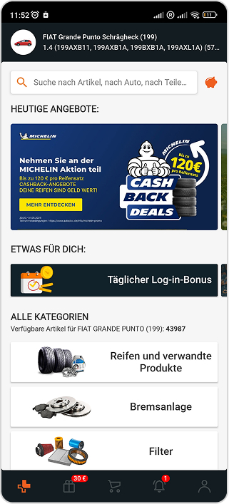
Преимущества: Иконки категорий понятны.
Недостатки: Огромное количество товаров создает ощущение сложности.
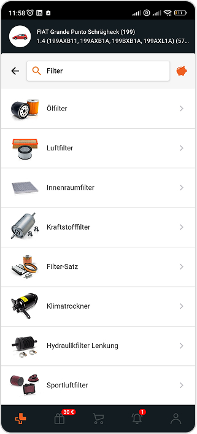
Преимущества: Четкое разделение на типы фильтров.
Недостатки: Избыточный выбор: зачем здесь "Спортивный фильтр" для обычного авто?
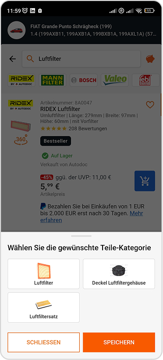
Преимущества: Гарантия точности выбора.
Недостатки: Лишний клик. Пользователь уже нажал Luftfilter, зачем заставлять его подтверждать это еще раз?
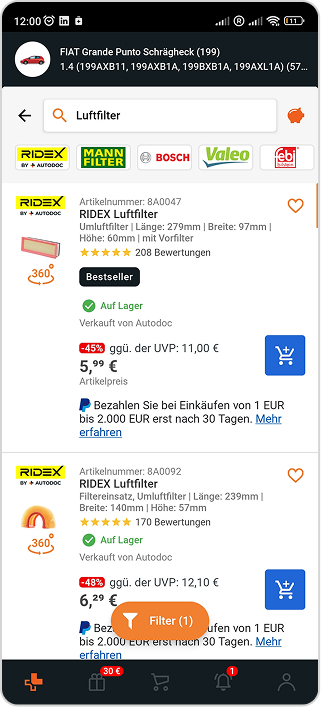
Преимущества: Ярлыки "Bestseller" и рейтинги помогают выбрать.
Недостатки: Визуальный шум. Слишком много мелких технических характеристик и рекламных блоков оплаты.
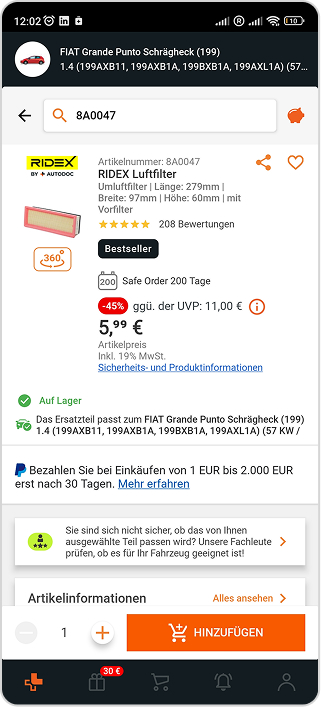
Преимущества: Зеленая галочка "Подходит к вашему авто" снимает страх ошибки.
Недостатки: Блок "Вы не уверены?" подрывает доверие и навязывает платную проверку.
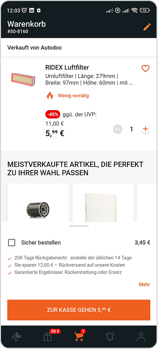
Преимущества: Релевантные доп. товары. Предложение масляного фильтра полезно для тех, кто делает полное ТО.
Недостатки: Навязчивые услуги Safe Order за 3.45 € загромождают экран и воспринимаются как скрытая наценка.
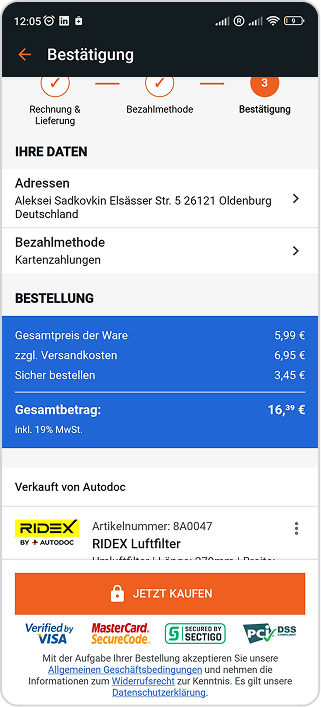
Преимущества: Прозрачный расчёт всех позиций.
Недостатки: Ценовой шок: доставка + Safe Order увеличивают цену в 3 раза в самый последний момент.
Семь шагов пути с действиями, мотивацией, барьерами, цитатами, точками контакта и драйверами.
| Шаги | Шаг 1: Выбор категории | Шаг 2: Выбор категории | Шаг 3: Уточнение | Шаг 4: Выбор товара | Шаг 5: Карточка товара | Шаг 6: Корзина | Шаг 7: Оплата |
|---|---|---|---|---|---|---|---|
| Действие | Нажатие на "Filter" в главном меню. | Нажатие на "Luftfilter" в списке категорий. | Выбор "Luftfilter" в всплывающем окне. | Просмотр списка доступных фильтров. | Проверка совместимости и "Добавить". | Проверка состава заказа. | Ввод данных и оплата. |
| Мотивация | Начать обслуживание авто. | Выбрать нужную группу товаров. | Сузить поиск до нужной детали. | Найти оптимальный по цене качество вариант. | Убедиться, что деталь точно подойдёт. | Перейти к оплате. | Завершить покупку. |
| Барьеры и их причины | Огромный выбор пугает. 43k+ товаров | Огромный выбор подвидов фильтра пугает. | Лишний клик. Дублирование выбора категории. | Информационный шум, много рекламы рассрочки. | Навязывание платной услуги | Неожиданные доплаты | Резкий рост цены в 3 раза |
| Ожидаемый результат | 😐 | 😕 | 🤨 | 😫 | 😠 | 🧐 | 😡 |
| Цитаты | "Так, где тут фильтры для моего Фиата?" | "Так много, ну мне бы тот что прямоугольный в моторе" | "Опять выбирать?" | "Слишком много данных" | "Зачем платить за проверку?" | "Доставка дорогая..." | "Почему так дорого?!" |
| Точки контакта | Главный экран | Список категорий | Модальное окно | Список товаров | Карточка товара | Экран корзины | Итоговый экран |
| Драйверы | Наличие машины в гараже | Большие иконки с узнаваемым образом | Понятные иконки | Рейтинги и отзывы | Зеленая галочка "Подходит" | Кнопка покупки | Простота оплаты |
Три респондента с разным уровнем опыта проходят один и тот же сценарий покупки воздушного фильтра.
Фрилансер, Франкфурт
Контекст: Начинающий водитель, ищет салонный воздушный фильтр. Опыт покупки запчастей минимальный, важна простота и понятность терминов. Знаний о машине ноль, недавно села за руль, делает ТО потому что сказали делать ТО.
Ну я слышала что нужно выбрать машину так что я искала где добавить машину, потом я разбиралась что туда вводить, подсказки там есть но я их не поняла так что я спросила Gemini как заполнять поля. Я ввела марку, модель и год выпуска своей машины, чтобы приложение знало, для какого авто мы вообще все ищем. Вроде все прошло легко, машина сохранилась на главном экране. Подумала, ну отлично, дальше все как в любом другом приложении типа DM или H&M или ебей какой нибудь.
У меня честно глаза разбежались. Открылся огромный список одинаковых прямоугольных коробок. И никаких нормальных подсказок, с чего начать смотреть. Я просто листала вниз и не понимала, чем они вообще друг от друга отличаются, кроме картинки и логотипа. Ну мне нужен был фильтр так что я ткнула на фильтры, благо они подписаны. Потом опять ткнула на фильтр, и то не уверена тот ли это был фильтр.
Вообще нет! В названиях написаны какие-то технические слова. Я не механик, я просто хочу, чтобы в салоне не воняло. Непонятно, фильтр за 7 евро норм или надо обязательно брать какой-то супер вымудренный за 25 евро??
Ткнула практически пальцем в небо. Самый дешевый за 5 евро брать побоялась, вдруг развалится через неделю. Самый дорогой за 30 евро жаба задавила покупать. Выбрала что то посредине евро за 12, просто потому что лого бренда понравилось. Но я хз правильно или нет.
Да, самая главная фобия что я приеду на сервис, мастер откроет коробку и скажет "Это не то". В карточке есть какая-то мелкая плашка про совместимость, но она так незаметно написана, что я все равно сидела и перепроверяла по несколько раз с чатом gpt.
В корзине все выглядело нормально, мой выбранный фильтр и все. Когда я нажала переходить дальше к адресу и оплате, итоговая сумма увеличилась. Я сначала не поняла, откуда взялись лишние деньги, если доставка вроде была посчитана отдельно.
Оказалось, приложение вписало услугу безопасный заказ за пару евро. Бесит когда за меня решают и на крысу добавляют платные функции. Пришлось искать, где это выключается. Осадочек остался неприятный.
Рабочий на складе, Вюрцбург
Контекст: Недавно купил свой первый автомобиль Volkswagen Golf Mk4. Опыт ремонта минимальный, но активно читает Drive2 и профильные форумы, пытается во всём разобраться сам. Впервые заказывает масло и масляный фильтр через приложение Autodoc.
Да я первым делом гараж настроил, вбил свой Golf 4, 1.6 бензин, 2001 года. Фича удобная тачка зафиксировалась сверху, значит, приложение должно отсеивать детали от других машин и не предлагать хлам от какого нибудь пассата.
Тут немного сгорел. Захожу в категории, жму на масло, а там того масла хрен знает сколько. Я гуглил по маркам которые слышал раньше, то что на сайте написано вообще ничего не дает, цифр куча а к чему привязаны не понятно. Короче с чатом выбрал да и все. Потом по фильтрам полез лазить, могли бы добавить какую нибудь вкладку для замены масла чтобы вместе выбирать, пока выбрал замахался.
Ну, вывалился список штук на 40 видов масла. Ну как я и говорил я с чатом выбирал что по началу что по фильтрам.
С фильтром еще быстро разобрался, а вот с маслом жестко конечно была. Тупо все гуглил ну а выбрал с чатом как и говорил раньше.
Я взял Mann фильтр, просто потому что его на форумах чаще всего хвалят, да и цена средняя. А с маслом просидел минут двадцать. Взял 5W-40, но чисто на свой страх и риск. ГПТ лучше проверяет. Но знакомый вроде тоже одобрил.
Ну. На четвёртых гольфах разброс по моторам огромный. Вдруг этот фильтр по резьбе или высоте не встанет, или масло по допуску движок ушатает? В приложении пишется галочка подходит для вашего авто, но она какая-то мелкая я там несколько раз переходил по рекламным ссылкам авитодока и попадал на масла которые не подходят, на кой х их вообще показывает в карточках? только пугает. Хотелось бы прямо жирную зелёную плашку (!!!)Точно подойдёт на Golf IV 1.6, если бы еще писало "Зуб даю" или "Ж**у ставлю" то вообще хорошо (Раскатистый смех с посредственной шутки).
Ну я закинул фильтр за 8 евро и канистру масла за 35 евро. Захожу в корзину там сумма
43 евро, плюс доставка. Всё ок. Жму к оплате, ввожу адрес, смотрю на итоговый чек, а
там не 43 евро, а почти 46. Ну я этот чекбокс
скинул и снова 43.
Дополнительный вопрос: Какие чувства вызывает эта услуга?
Я думаю это скам на доп страховку. Товар же и
так и так вернуть можно, мы ж в Германии. Хотя по
возврату там как то мутно и не понятно бесплатный ли возврат по почте. Я
думаю если ты не уверен в покупке то ставишь галочку чтобы на возврате не так
затратно было.
Инженер, Гамбург (есть свой гараж)
Контекст: Базово разбирается в устройстве двигателя. Предпочитает обслуживать авто с качественными комплектующими, ищет оригинальные номера OEM через поиск и ИИ, после чего заказывает детали по артикулу в Autodoc. В этот раз покупает воздушный фильтр двигателя Luftfilter.
Я не листал категории вручную. Сначала спросил у нейросети OEM номер оригинала по вин коду своего авто. Получил точный артикул воздушного фильтра, открыл Autodoc, вставил этот номер прямо в поисковую строку на главном экране и нажал поиск.
Легкое раздражение от выдачи. Приложение начинает активно подсовывать на первые строчки свои собственные бренды вроде Ridex или Stark. У них низкая цена, но я им вообще не доверяю качество там сомнительное, потом ремонтировать дороже. Пришлось прокручивать эти позиции, чтобы дойти до нормальных производителей.
В целом да, но мне как человеку, который ищет по артикулу, не хватало конкретики. В карточках часто неудобно сравнивать технические параметры. Приходилось открывать десяток вкладок с товарами и сравнивать.
Смотрел на привычные бренды средней плюс категории. Выбрал Mahle, потому что цена на него в этот день была адекватнее, чем на MANN, а по качеству они одинаковые. Дешевые бренды от самого Autodoc просто проигнорировал.
Сомнения только в плане точного соответствия размеров. Плашка совместимости нужно еще откопать. Мне нужна не просто галочка подходит, а четкое подтверждение в описании по типу "Заменяет оригинальный артикул XXX-XXX".
Закинул фильтр, проверил артикул, перешел к оплате. По вводу данных всё стандартно, но перед оплатой скинул этот Сaфе ордер, это как пожертвовать 2 евро на экологию от тему и товар приедет на дизельном грузовике ДХЛ. Если бы она было не включена то еще ок, а так немного бесит.
Обираясь на CJM и Глубинное интервью опрошенных персон, я выделил 4 ключевые проблемы и сформулировал гипотезы для их решения.
Инсайт: Пользователи всех категорий хотят максимально быстро попасть к списку запчастей, но сталкиваются с искусственными барьерами в меню.
Проблема: Повторяющееся модальное окно «Уточнение» создаёт дублирующее действие на 3-м шаге CJM, что приводит к лишним кликам, раздражению и затягиванию пути к покупке.
Если мы уберём промежуточное модальное окно «Уточнение» и позволим пользователю выбирать конкретный тип фильтра сразу из главного меню категорий,
То сократится время до нахождения нужного товара,
Потому что мы устраним дублирующее действие и лишний барьер в CJM.
Инсайт: Огромный выбор из тысяч аналогичных позиций в сочетании с перегруженными техническими терминами заставляет новичков испытывать страх ошибки, а более опытных — тратить время на поиск баланса цены и качества.
Проблема: Отсутствие визуальных ориентиров (бейджей, меток «Топ продаж») и понятных пояснений к терминам вызывает у пользователей когнитивную перегрузку («паралич выбора») и неуверенность в совместимости деталей.
Если мы внедрим систему умных бейджей - например, "Лучшее соотношение цена / качество", "Легко установить", "Топ продаж" - и добавим всплывающие подсказки с объяснением терминов.
То поток из просмотра списка в корзину вырастет.
Потому что это снизит нагрузку и страх совершить ошибку при выборе из тысяч позиций.
Инсайт: Автоматически добавленные платные опции воспринимаются пользователями как манипуляция и скрытая наценка, разрушая доверие к платформе.
Проблема: Услуга Safe Order, включённая по умолчанию, вызывает «ценовой шок» на этапе оплаты и вынуждает людей вручную выискивать способ её отключить, оставляя негативное впечатление о сервисе.
Если мы перенесём предложение услуги Safe Order в формат опционального чекбокса с чётким объяснением выгоды, а не по умолчанию включённой услуги, и дадим возможность отключить её один раз в профиле для всех заказов.
То лояльность опытных пользователей вырастет.
Потому что они перестанут чувствовать давление и манипуляцию со стороны интерфейса.
Инсайт: пользователи всех уровней подготовки уходят из приложения в сторонние нейросети, чтобы расшифровать данные авто, подобрать совместимый OEM-артикул или получить рекомендацию по фильтрам и маслам без сложных терминов.
Проблема: Пользователи вынуждены покидать Autodoc и разрывать пользовательский сценарий (Customer Journey), так как интерфейс приложения не предлагает понятных персональных рекомендаций на человеческом языке и требует самостоятельного поиска артикулов на сторонних ресурсах.
Если мы интегрируем умного ИИ-ассистента в поиск и карточки товаров, который умеет подбирать OEM-артикулы по VIN, переводить сложные технические термины на понятный язык и давать рекомендации по выбору аналогов.
То процент отказов и ухода пользователей из приложения во внешние сервисы снизится, а скорость принятия решения о покупке вырастет.
Потому что пользователю больше не придётся покидать Autodoc для консультации с внешними нейросетями, а вся необходимая помощь в выборе будет доступна в один клик прямо в интерфейсе.
Разбор того, как те же шаги сценария решены у Mister Auto, и что из этого можно перенести в Autodoc.
Быстро найти совместимый и качественный фильтр по разумной цене и оформить заказ.
Пользователь уже добавил машину в гараж и находится на главной странице.
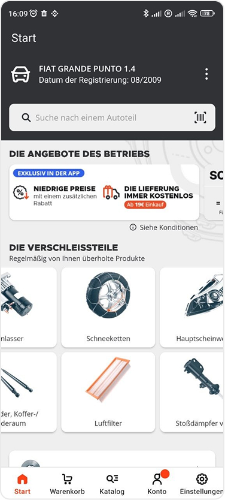
Проблема: В автомобиле существует много вариантов фильтров разного назначения.
Решение: В главном меню добавлены отдельные позиции для вариантов фильтров.
Как это помогает: Убирает необходимость в дополнительном модальном окне для выбора подкатегории.
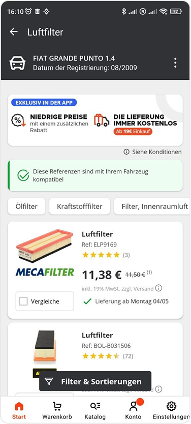
Проблема: Выбор запчастей разнообразен и множество позиций с картинками создают информационный и цветовой шум.
Решение: Карточки товаров крупные и читабельные, выбор по брендам находится в своей вкладке с остальными фильтрами.
Как это помогает: Сосредотачивает пользователя на товаре который он ищет.
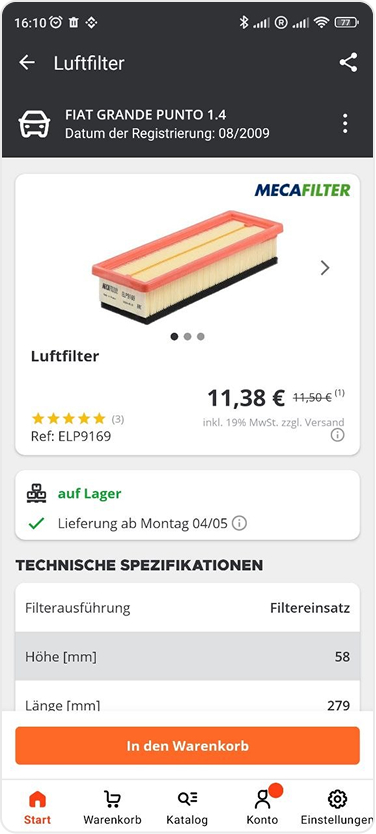
Проблема: Товар выбран и нужно убедиться что деталь подходит.
Решение: Вся информация расположена в приоритетном порядке и крупнее.
Как это помогает: Пользователь получает информацию о товаре порционно и легче усваивает.
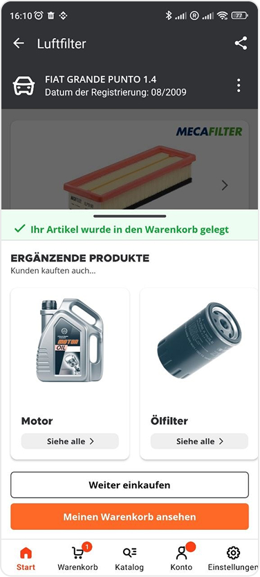
Проблема: Товар добавлен в корзину и нужно напомнить о сопутствующих товарах.
Решение: Добавлено модальное окно с сопутствующими категориями товаров.
Как это помогает: Пользователь может сразу перейти в категорию товаров которые часто покупаются вместе что сократит его затраты на доставке и времени.
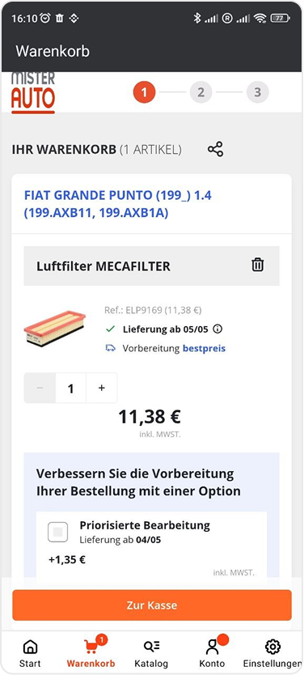
Проблема: При оформлении покупки пользователи часто переживают, что склад может долго собирать посылку, и ремонт затянется. Также на этапе корзины часто возникают сомнения из-за навязчивых дополнительных платных услуг, которые усложняют интерфейс.
Решение: Mister Auto внедрили простую и понятную опцию "Приоритетная обработка" за небольшую фиксированную плату 1,35 €. Опция представлена в виде лаконичного блока с чекбоксом.
Как это помогает: Это дает пользователю чувство контроля над ситуацией. Вместо того чтобы навязывать сложную страховку, сервис предлагает конкретное решение для тех, кому нужно "быстрее". Интерфейс остается чистым, не отвлекая от завершения покупки, а возможность выбора повышает лояльность к бренду.
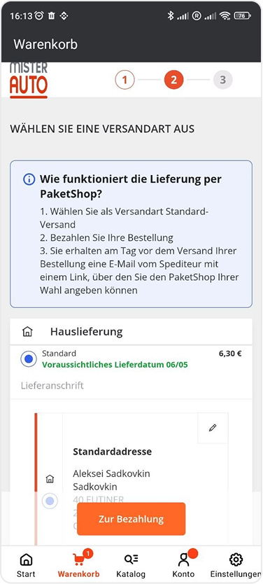
Проблема: Пользователю нужно понимать, как забрать заказ и сколько это стоит, не переходя на сторонние сервисы.
Решение: На экране представлен выбор типа доставки и информационный блок о том, как работает доставка в пункты выдачи. Четкое указание цены за доставку и ожидаемой даты прибытия.
Как это помогает: Позволяет сразу увидеть финальную надбавку к цене и сроки, не заполняя лишних анкет. Информация о PaketShop в синем блоке заранее отвечает на вопросы о процессе получения, что снижает тревожность перед оплатой.
Переработанный флоу: те же 6 шагов, но без лишнего модального окна, с крупными карточками и прозрачной корзиной.
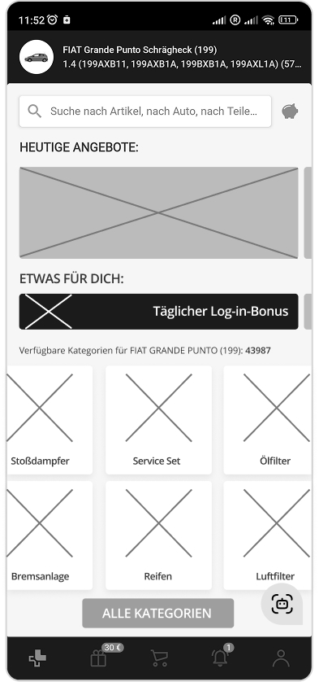
Улучшение: В главном меню вместо списка категорий представлены прокручиваемые крупные карточки наиболее популярных категорий, и кнопка для полного списка категорий.
В области большого пальца добавлена кнопка ИИ Ассистента для быстрого доступа.
Как это помогает: Убирает информационную нагрузку с рядового юзера и создает отдельное пространство с полным перечнем категорий.
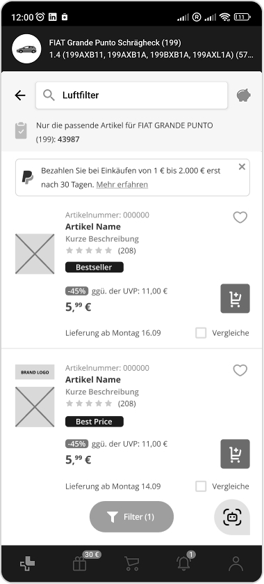
Улучшение: Карточки товара крупные и читабельные, разноцветные иконки брендов были перенесены во вкладку "фильтры".
Добавлена информация в верху списка что показаны только товары подходящие для выбранного авто.
В области большого пальца добавлена кнопка ИИ Ассистента для быстрого доступа.
Акционная информация paypal больше не дублируется на каждой карточке и вынесена вверх списка с возможностью ее скрыть.
Как это помогает: Сосредотачивает пользователя на товаре который он ищет. Не нагружает человека излишним количеством данных.
Снижает нагрузку и неуверенность в том точно ли это моя запчасть, и убирает лишние маркеры на каждой карточке.
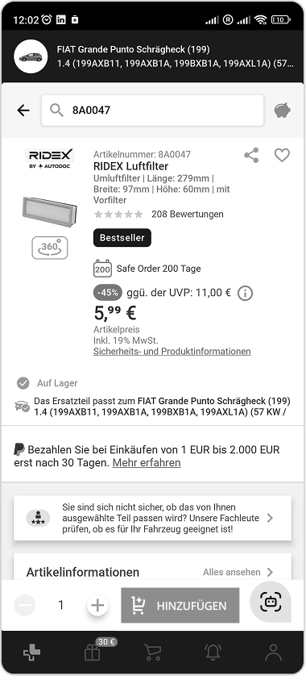
Улучшение: В области большого пальца добавлена кнопка ИИ Ассистента для быстрого доступа.
Как это помогает: Снижает стресс от неуверенности и может в любой момент задать вопросы помощнику.
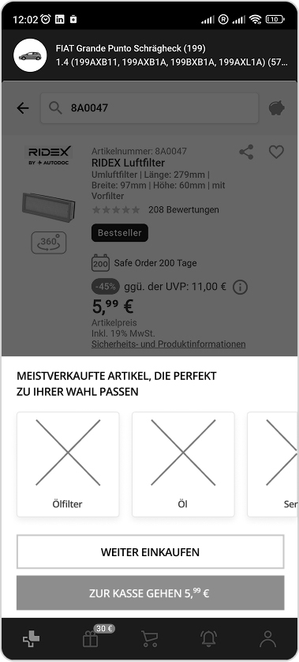
Улучшение: Добавлено модальное окно с сопутствующими категориями товаров.
Как это помогает: Пользователь может сразу перейти в категорию сопутствующий товаров после добавления в корзину чтобы не переходить из корзины назад в товары если он что то забыл, что сократит его затраты на доставке и времени.
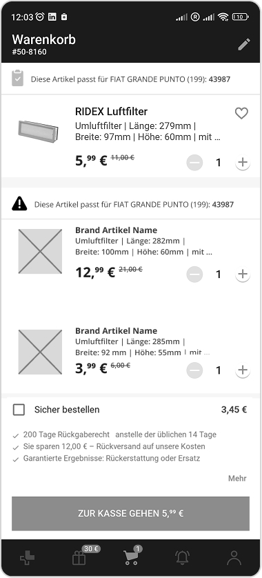
Улучшение: Добавлено разделение на товары подходящие для авто и не подходящие. Так же добавлены рекламные блоки чтобы пользователь не упустил акционные предложения.
Чек бокс Safe Order больше не отмечен по умолчанию.
Как это помогает: Пользователь может видеть список по группам и увидеть товары которые возможно были добавлены случайно и не подходят его авто.
Снижает давление на пользователя со стороны приложения.
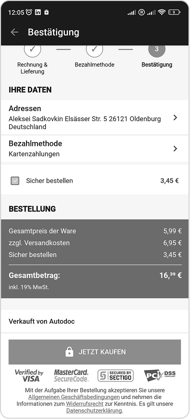
Улучшение: На экран перед оплатой добавлена возможность добавить/снять чекбокс с Safe Order.
Как это помогает: Позволяет сразу увидеть финальную надбавку к цене и сроки. Чтобы убрать или добавить дополнительную страховку не нужно возвращаться на предыдущие экраны.
Проведённое исследование позволило по-новому взглянуть на процесс покупки автозапчастей и выявить критические точки, где бизнес теряет лояльность пользователей.
Главный вывод исследования: удобство поиска должно подкрепляться прозрачностью сделки. Устранение лишних кликов на этапе выбора и ценового шока на этапе оплаты позволит значительно увеличить продажи и снизить процент брошенных корзин.